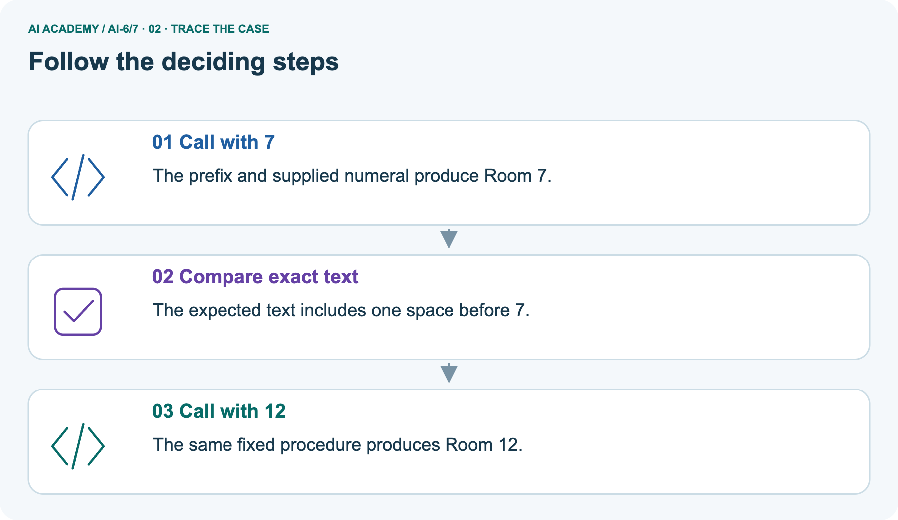
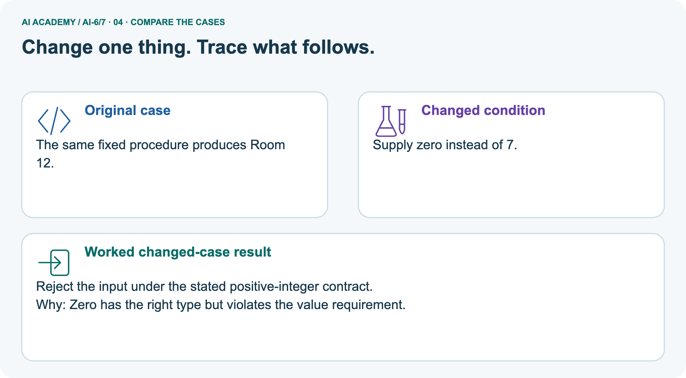
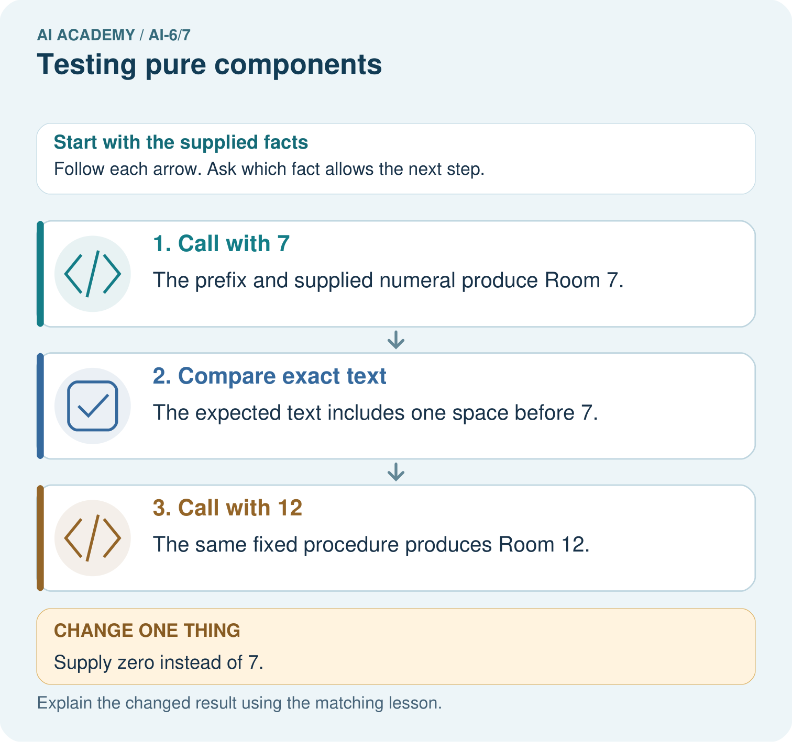
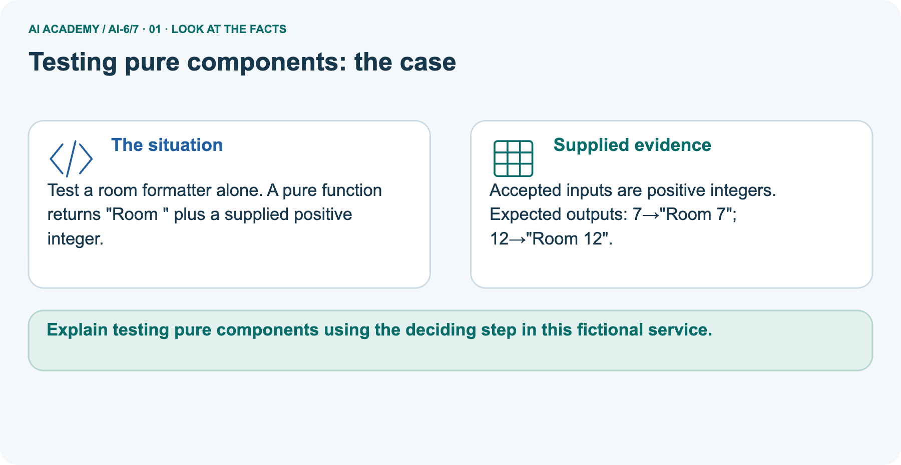
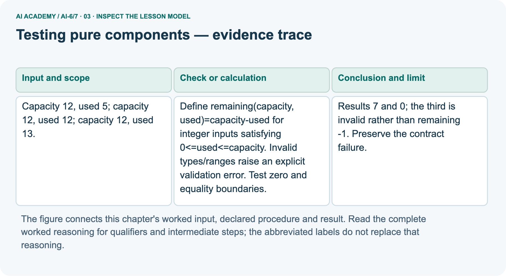
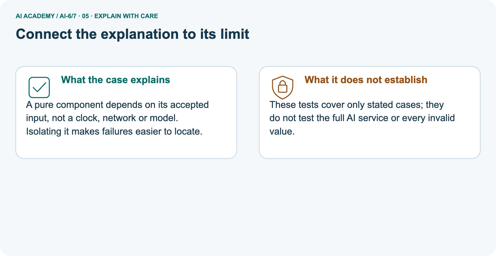
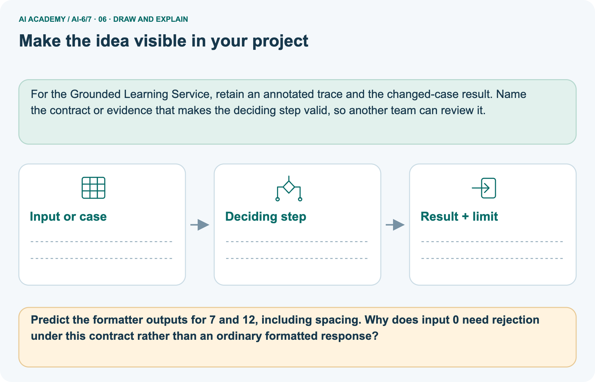

AI Academy · Level 6 · Grade 11 · Week 7 · Student lesson
Testing pure components
Learn to understand, design, build, test and explain AI systems responsibly.
Project: Grounded Learning Service
THE CONNECTED WEEK
Write the expectation. Run the component. Explain the difference.
Test pure computations with exact returned values and validation errors while keeping integration claims separate.
Keep one habit: Function contract → boundary table → formatter picture → test-evidence interpretation → executable harness → independent count set.
Main lesson · Section 1
Write the expected value or error before running the function
Isolate a small computation so a failure has a clear location.
Learning goals
I can explain the mechanism and terminology of testing pure components.
I can apply the stated procedure to a new case with a traceable result.
I can identify an assumption or limitation and design a revealing follow-up.
Retrieve contracts and boundary checks
Close your notes first. A rough first answer helps us choose the right starting point; it is not a score for your ability.
Without opening the old lesson, explain one key idea from Least privilege and tool scopes. Give an example and a mistake that the idea helps you avoid.
Without opening the old lesson, explain one key idea from Configuration and secrets. Give an example and a mistake that the idea helps you avoid.
Without opening the old lesson, explain one key idea from Requirements and service boundaries. Give an example and a mistake that the idea helps you avoid.
After trying, check the relevant lesson or ask your teacher. Change the part of your explanation that the evidence shows was wrong.
Prerequisite and starting response
Recall Least privilege and tool scopes. Explain why a recorded result needs its input conditions and evidence source before it can support a claim.
End goal
Explain testing pure components using the deciding step in this fictional service.
Earlier wording, alternatives and picture transcripts
Your learning target
Remember before reading
This week you will practise:
Explain the mechanism and terminology of testing pure components
Apply the stated procedure to a new case with a traceable result
Identify an assumption or limitation and design a revealing follow-up
Retrieve what you already know
This week’s end goal
Main lesson · Section 2
Separate the calculation from the service around it
Purity requires both dependence on supplied inputs and no external side effects.
Begin with the remaining-places example
A remaining-places calculator should need only two supplied counts: capacity and used. It should not book a room, read a clock or ask a model. With the same accepted inputs it returns the same answer, without changing anything outside the computation. That makes an exact expected-value test useful. An invalid input has an expected error rather than a made-up number.
Define pure components
Pure components return results from supplied inputs without external side effects. They are easier to test with exact expected values.
Complete input/result/error contract
| Pure-component contract | Rule |
|---|---|
| Inputs | capacity and used are exact Python integers, excluding bool |
| Valid range | 0 ≤ used ≤ capacity; counts represent fictional places |
| Valid return value | capacity − used |
| Invalid type or range | Raise ValueError, without silently converting or clamping |
| Side effects | No booking, file, network, model call or external state change |
| Repeatability | Same accepted inputs → same return value |
| Test claim | Agreement for specified cases; full-service behaviour remains untested |
Name supplied and missing facts
Earlier wording, alternatives and picture transcripts
Begin by writing the question the procedure is intended to answer. Identify the information already supplied, the information it will produce and the information still missing.
These are constructed classroom examples; they do not require live accounts, private records or an external service. Do not treat a plausible explanation as a measured outcome.
Main lesson · Section 3
Trace the valid and invalid boundaries
Do not let ordinary subtraction bypass the declared range.
Original remaining function contract
Define remaining(capacity, used)=capacity-used for integer inputs satisfying 0<=used<=capacity. Invalid types/ranges raise an explicit validation error. Test zero and equality boundaries.
Complete hand-derived expected outcomes
| Supplied input | Contract check | Expected outcome |
|---|---|---|
| capacity 12, used 5 | Integers; 0≤5≤12 | Return 12−5 = 7 |
| capacity 12, used 12 | Equality is allowed | Return 0 |
| capacity 12, used 13 | Used exceeds capacity | ValueError; do not return −1 |
| capacity 0, used 0 | Zero/equality boundary valid | Return 0 |
| capacity 12, used quoted 5 | Wrong type | ValueError; no conversion |
| capacity True, used 0 | Boolean excluded | ValueError |
Write assumptions before applying the procedure
Before applying the procedure, write its units, denominator or decision boundary where relevant. A partner should be able to repeat each step using the same inputs.
If a required input is absent or violates the stated contract, record that condition explicitly instead of quietly replacing it with a convenient value.
Explain the visual
Point to the input, the deciding step and the result in this week’s visual. Explain the same step in ordinary words. A picture helps when you can say what each part represents.
Earlier wording, alternatives and picture transcripts
Testing pure components — evidence trace
Connect the picture and the explanation
Main lesson · Section 4
Change one input and predict value versus error
Keep the same contract rather than fixing a test by changing its rule.
Current task and response
Capacity 12, used 5; capacity 12, used 12; capacity 12, used 13. Show the intermediate steps and give the conclusion with its scope.
Predict the zero-room formatter picture
Change: Supply zero instead of 7.
Check after predicting
Prediction: Reject the input under the stated positive-integer contract.
Reason: Zero has the right type but violates the value requirement.
Earlier wording, alternatives and picture transcripts
Compare a familiar case with a changed case
Change one thing in the pictured case
Main lesson · Section 6
Compare two pure functions with different boundaries
Exact spacing can be part of an expected result.
Main three-case inputs and outcomes
Capacity 12, used 5; capacity 12, used 12; capacity 12, used 13.
Results 7 and 0; the third is invalid rather than remaining -1. Preserve the contract failure.
Keep the trace’s scope
Compare the intermediate evidence with the final statement. Explain why each number or decision follows from the stated inputs.
The conclusion belongs to this scenario and procedure; changing the inputs, evaluation population or authority can change what it establishes. Retain the raw record so a later revision can be compared honestly.
Separate formatter inputs and complete output rules
Test a room formatter alone. A pure function returns "Room " plus a supplied positive integer.
Accepted inputs are positive integers. Expected outputs: 7→"Room 7"; 12→"Room 12".
The main function subtracts validated counts; the picture is a separate formatter. It accepts a positive integer and returns the exact string "Room " followed by its digits. Input 7 gives "Room 7" and 12 gives "Room 12", with exactly one space after Room. Zero has an integer type but fails this formatter’s positive-value rule, even though zero is valid in some remaining-count cases.
Contracts belong to the specific function; do not transfer a boundary rule without checking it.
Trace exact text and input validation



Read the picture one step at a time
A pure component depends on its accepted input, not a clock, network or model. Isolating it makes failures easier to locate.
Predict zero instead of room7
Change one thing: Supply zero instead of 7. Predict the result before checking the explanation. What remains the same?
Check after predicting



Explain spacing, rejection and test limits
These tests cover only stated cases; they do not test the full AI service or every invalid value.
Read the labelled picture: Predict the formatter outputs for 7 and 12, including spacing. Why does input 0 need rejection under this contract rather than an ordinary formatted response?
Reference: original optional remaining example
Optional local lab: predict the printed result before running this standalone Python 3 example. Change one relevant boundary input, record the outcome and state the contract or statistical assumptions.
The program uses fictional values and the Python standard library; it performs no external operations.
def nonnegative_integer(value):
return type(value) is int and value >= 0
def remaining(capacity, used):
if not nonnegative_integer(capacity) or not nonnegative_integer(used) or used > capacity:
raise ValueError('capacity/used')
return capacity - used
print(remaining(12, 5))Earlier wording, alternatives and picture transcripts
Learn from the worked case
Cover the result before checking it. Say what is given, choose the procedure, and follow one step at a time. Then uncover the result and explain your first mismatch. Ask why a step is allowed, not only what number it produces.
A pictorial worked case: Testing pure components
The facts we will use



Why this result follows
What this example does not establish
Main lesson · Section 7
Know what a passing component test did and did not check
An expected rejection is a successful contract test.
Core unit-versus-integration qualification
Passing unit cases for a pure function does not establish integration permissions or model-dependent behaviour.
A useful check asks what would make the reasoning fail. Distinguish a failure to execute the declared procedure from a weakness in the procedure itself.
The first may require a correction; the second requires an explicitly revised method and new evidence. Preserve unsuccessful cases so an improved result cannot hide the original problem.
Complete test-evidence interpretation
| Test or evidence | What it can establish |
|---|---|
| Expected outcome specified before a run | A comparison target from the contract, not an invented observation |
| remaining(12, 5) returns 7 | Agreement for this supplied input |
| remaining(12, 13) raises ValueError | Correct rejection for this out-of-range case |
| Repeated same-input calls agree | A repeatability check on those calls, not a proof covering all external-state dependence |
| A finite property sweep | Checks invariants on listed finite input ranges; not every possible integer |
| Deliberately wrong subtraction returns 6 instead of7 | The expected-value test detects this defect |
| All unit cases pass | These component checks pass; permissions, integration, real data and model behaviour remain separate |
Guided explanation and repair
A report omits this qualification: Passing unit cases for a pure function does not establish integration permissions or model-dependent behaviour.
Explain how omitting it could change a reader's interpretation, and write an accurate replacement.
Earlier wording, alternatives and picture transcripts
Locate the earliest unsupported step
Main lesson · Section 8
Practise deriving expected results from the contract
Write the reason beside every value or error.
Current explanation and guided scope check
Explain the weekly mechanism in your own words. Use the worked scenario to name its input, decision rule and output.
Supported W2 record
Use workbook W2 for the connected example “Testing pure components”. First fill the input and rule boxes. Try the middle steps before asking for a hint. After a hint, try the next step yourself.
| Plan | Do | Check |
|---|---|---|
| What is given? Which rule or procedure applies? | Record each intermediate step. | Does the result follow? What remains unknown? |
Explain your trace to a partner. Your partner points to one step to check. Swap roles on the next case. Each person writes their own explanation.
Individual unit-test limit check
Use the worked case for Testing pure components. Proposed explanation: “The worked result establishes every future case”. Decide whether this explanation is supported.
Point to the step or supplied fact that decides; explain your repair if needed.
Answer on your own before discussion. If you are unsure, say which step you need help with.
Formatter picture response
Predict the formatter outputs for 7 and 12, including spacing. Why does input 0 need rejection under this contract rather than an ordinary formatted response?
Reserve independent capacity9 cases
This is supported practice. Keep the separately named independent case for an attempt before feedback.
Earlier wording, alternatives and picture transcripts
Practise with less help: Trace the worked case
Check your reasoning
Explain the picture
Main lesson · Section 9
Run the complete unit-case and defect-detection audit
Keep expected outcomes, actual outcomes and pass/fail evidence in one record.
Current main boundary investigation
Capacity 12, used 5; capacity 12, used 12; capacity 12, used 13. Show the intermediate steps and give the conclusion with its scope.
Complete runnable tests and explicit faulty variant
"""Exact expected-value/error tests for two supplied pure components."""
def remaining(capacity,used):
if type(capacity) is not int or type(used) is not int:
raise ValueError('capacity/used type')
if not 0<=used<=capacity:
raise ValueError('capacity/used range')
return capacity-used
def room_label(number):
if type(number) is not int or number<=0:
raise ValueError('positive room number')
return 'Room '+str(number)
def check(function,args,expected):
try:
actual=('value',function(*args))
except ValueError:
actual=('error','ValueError')
return {'input':args,'expected':expected,'actual':actual,'passed':actual==expected}
cases=[((12,5),('value',7)),((12,12),('value',0)),((0,0),('value',0)),
((12,13),('error','ValueError')),((12,-2),('error','ValueError')),
((12,'5'),('error','ValueError')),((True,0),('error','ValueError'))]
records=[check(remaining,args,expected) for args,expected in cases]
for record in records:print('Remaining:',record)
assert all(r['passed'] for r in records)
formatter=[check(room_label,(7,),('value','Room 7')),
check(room_label,(12,),('value','Room 12')),
check(room_label,(0,),('error','ValueError'))]
for record in formatter:print('Formatter:',record)
assert all(r['passed'] for r in formatter)
assert remaining(12,5)==remaining(12,5) # repeated call, not new service evidence
# Finite property sweep, not an exhaustive proof for every integer.
for capacity in range(9):
for used in range(capacity+1):
value=remaining(capacity,used)
assert 0<=value<=capacity and value+used==capacity
# Deliberate wrong copy: tests should detect a changed outcome.
def off_by_one(capacity,used):
return capacity-used-1
fault=check(off_by_one,(12,5),('value',7))
assert not fault['passed'] and fault['actual']==('value',6)
print('Deliberate defect detected:',fault)
print('Unit cases do not test live room data, authorization, network, model or full integration.')
Expected records, finite properties and limits
Predict each expected/actual record before running or tracing. The complete harness distinguishes a returned value from ValueError and compares exact outcomes. It tests normal, equality, zero, range and type cases for remaining, then exact strings and zero rejection for the separate formatter. A finite sweep checks nonnegative/bounded results and value + used = capacity.
A deliberately wrong copy subtracts one extra place and is caught by the expected-value test; its failed record is intentional evidence that this test detects that defect. No external service is called. Keep the new capacity 9 set for individual explanation.
Evidence ledger and reflection
| Record | Your evidence |
|---|---|
| Given input and fixed rule | |
| Prediction before checking | |
| Actual result, or “not run” | |
| First mismatch and one explanation | |
| Boundary or missing input and expected response |
On paper, trace the supplied procedure. If code is provided, predict before running it in a local practice file. Never write an expected answer as though it were an observed run.
Before trying: what do I expect, and why? While trying: which step could first go wrong? Afterwards: what did I actually observe, and what should change? Keep “not run” if you only traced the procedure.
Reference: original remaining snippet
def nonnegative_integer(value):
return type(value) is int and value >= 0
def remaining(capacity, used):
if not nonnegative_integer(capacity) or not nonnegative_integer(used) or used > capacity:
raise ValueError('capacity/used')
return capacity - used
print(remaining(12, 5))Earlier wording, alternatives and picture transcripts
Predict, investigate and preserve the evidence
Plan → try → check
Main lesson · Section 14
Try alone: evaluate fresh capacity9 boundaries
State whether each input returns a value or raises an error, with a reason.
Complete independent count set
Capacity 9 with used 0, 9, 10 and Boolean True. Give outcomes.
First attempt and support record
Attempt this case before feedback. Record any help. Earlier examples below are further practice; a case already practised with feedback cannot establish fresh transfer.
Feedback after trying
Attempt the independent case before hints. Record whether you worked alone, used a hint or followed a model. After feedback, fix the first unsupported step and explain why it changed.
A later check uses a changed case, not a copied answer.
Earlier wording, alternatives and picture transcripts
Independent case: Apply a new case independently
Attempt this without hints
Capacity 9 with used 0, 9, 10 and Boolean True. Give outcomes.
Record support used: none, hint or teacher explanation. After feedback, a different case is needed to demonstrate independence.
Use feedback to improve
Main lesson · Section 11
Save the function contract with expected and observed cases
Keep failed cases and the first discrepancy when revising a component.
Project task and artifact
Add a labelled testing pure components evidence sheet to Grounded Learning Service. Show how you can explain the mechanism and terminology of testing pure components.
Use the supplied fictional case and keep its inputs, intermediate steps, calculation or prediction, and limitation. Connect this record to last week’s record; a matching answer without a trace is insufficient.
| Project evidence | Record |
|---|---|
| Component and version | |
| Inputs permitted at prediction time | |
| Trace and comparison with earlier work | |
| Failure, limit and human review |
Actual run or trace and limitations
For the Grounded Learning Service, retain an annotated trace and the changed-case result. Name the contract or evidence that makes the deciding step valid, so another team can review it.
Earlier wording, alternatives and picture transcripts
Evidence for your project
Main lesson · Section 16
Finish with a tested component and a bounded claim
Correct local arithmetic does not establish full-service correctness.
Retrieve and explain
Close your notes. Explain this goal in your own words: Explain the mechanism and terminology of testing pure components
Plan a changed-case return
If you are unsure, return to the worked picture and explain one arrow. If you are ready, change an input or assumption and justify your prediction.
Save your workbook evidence. At the next review, try a different case before opening your old answer.
Reference bank and extra practice
Choose the reference that helps your next step.
Reference · Use service vocabulary precisely
Reference · Section 5
Reference · Use service vocabulary precisely
Connect each term to an input, operation, evidence source or outcome.
Vocabulary and your explanation
| Word | Meaning |
|---|---|
| Pure function | A computation with no externally observable side effects |
| Boundary case | An input at a contract edge |
| Expected outcome | The result or error specified before execution |
Extra challenge · Explain a stronger case
Reference · Section 10
Extra challenge · Explain a stronger case
Choose the next challenge after the main route.
Explain,repair and extend
Explain the weekly mechanism in your own words. Use the worked scenario to name its input, decision rule and output.
A report omits this qualification: Passing unit cases for a pure function does not establish integration permissions or model-dependent behaviour.
Explain how omitting it could change a reader's interpretation, and write an accurate replacement.
For the worked scenario, propose one additional case that could reveal a failure, describe its expected outcome before running it, and explain what would need to remain fixed for a fair comparison.
Do not reuse W4 as a new final test after receiving feedback.
Explain → apply → challenge
Reference · Check the service reasoning and its limits
Reference · Section 12
Reference · Check the service reasoning and its limits
Use after practice; keep the selected independent case for its first attempt.
Current explanation and response
Complete the supported workbook tasks before attempting W4 independently. Record any hints or help used. After feedback, use the teacher's fresh retry rather than copying the earlier answer.
For a project, select a relevant new case, predict the outcome from the declared rule and preserve the result alongside any revision.
For the worked scenario, propose one additional case that could reveal a failure, describe its expected outcome before running it, and explain what would need to remain fixed for a fair comparison.
Do not reuse W4 as a new final test after receiving feedback.
Extra practice · Revisit the complete trace
Reference · Section 13
Extra practice · Revisit the complete trace
Predict before reading the supplied steps.
Complete trace and evidence
Complete evidence record
Testing pure components — evidence trace
Follow the input through the stated procedure to its result. Cover the result first, predict it, then explain every intermediate step. The text/table accompanies the figure so the example can be read without colour.
Reference · The earlier route checklist
Reference · Section 15
Reference · The earlier route checklist
Use one main route rather than repeating the lesson.
Targets,route and first prediction
Start with this question: Test a room formatter alone. A pure function returns "Room " plus a supplied positive integer.
| By the end, I can | How I will show it |
|---|---|
| Explain the mechanism and terminology of testing pure components | Explain the deciding step, show a trace or test, and state one limit. |
| Apply the stated procedure to a new case with a traceable result | Explain the deciding step, show a trace or test, and state one limit. |
| Identify an assumption or limitation and design a revealing follow-up | Explain the deciding step, show a trace or test, and state one limit. |
Remember → watch and explain → try with help → investigate → try independently → keep project evidence. Your teacher may spread this lesson across several classes.
Keep your first prediction. Compare it with what the evidence shows and explain any change.
Extra practice · Predict,check and repair
Reference · Section 17
Extra practice · Predict,check and repair
Keep supported feedback separate from the independent case.
First supported question and optional hint
Test a room formatter alone. A pure function returns "Room " plus a supplied positive integer.
Which labelled step matches this detail? The same fixed procedure produces Room 12.
1. Call with 12
2. Compare exact text
3. Call with 7
Hint if needed: Read the steps in the pictorial case. Match the supplied detail to the stage that performs or records it.
Practice 1: explain the deciding evidence
Check after the first attempt
After your attempt, compare with the supported explanation: Call with 12 The same fixed procedure produces Room 12. A pure component depends on its accepted input, not a clock, network or model.
Isolating it makes failures easier to locate.
Changed-case question and optional hint
Changed-case practice: Supply zero instead of 7. Which conclusion is supported by the supplied facts?
1. This one example guarantees correct results for every future input.
2. Reject the input under the stated positive-integer contract.
3. We can decide the result without examining the changed input or the procedure.
Hint if needed: Use the changed condition and the deciding step in the pictorial trace. The answer must say what follows from those facts.
Practice 2: explain the deciding evidence
Check after the changed attempt
After your attempt, compare with the supported explanation: Reject the input under the stated positive-integer contract. Zero has the right type but violates the value requirement.
Repair and retain the record
Review Least privilege and tool scopes (ai-6/6). Goal: Explain the mechanism and terminology of least privilege and tool scopes. Short practice: Classify read S2, write S2 and read S5 as permitted or denied.
Identify the operation or station mismatch for each denial, then reconsider after read S5 is added to trusted scope.. Return to this week and explain what you changed.
Review Configuration and secrets (ai-6/4). Goal: Explain the mechanism and terminology of configuration and secrets. Short practice: Point to the public setting and the protected credential.
What changes when maximum_words becomes 60, and which information must never appear in the startup log?. Return to this week and explain what you changed.
Review Requirements and service boundaries (ai-6/1). Goal: Explain the mechanism and terminology of requirements and service boundaries. Short practice: Split the museum visitor’s request into two operations.
Which can the service perform for P, and what happens to each operation when Q has no approved card?. Return to this week and explain what you changed.
The browser lab lets you edit the supported Python examples already included in this lesson. Predict first, run, inspect the actual output or error, change one input, then run again.
Keep code, predictions, actual results and a reasoned revision together. On paper, label your result as a trace rather than an execution.
Use Download completed work in the hosted lesson to export your answers, reflections, practice feedback and code-run evidence. Open the HTML copy to read or print it.
Drafts stay in this browser when storage is available; clear drafts on a shared device.
Earlier wording, alternatives and picture transcripts
Use this supported practice once, in the browser or on paper. Keep the reserved independent assessment for a separate first attempt before teacher feedback.
Repair a missing building block
Predict, run and debug
Keep your completed work
Reference · Six-picture concept journey
Reference · Section 18
Reference · Six-picture concept journey
Choose the picture that supports the current explanation.
01. Testing pure components: the case



Test a room formatter alone. A pure function returns "Room " plus a supplied positive integer. Supplied facts: Accepted inputs are positive integers. Expected outputs: 7→"Room 7"; 12→"Room 12".
Point to the given fact that matters most. Explain why it matters.
02. Follow the deciding steps
Call with 7: The prefix and supplied numeral produce Room 7. → Compare exact text: The expected text includes one space before 7. → Call with 12: The same fixed procedure produces Room 12.
Point to each numbered stage and explain which recorded input it uses.
03. Testing pure components — evidence trace



Testing pure components — evidence trace. Capacity 12, used 5; capacity 12, used 12; capacity 12, used 13. | Define remaining(capacity, used)=capacity-used for integer inputs satisfying 0<=used<=capacity.
Invalid types/ranges raise an explicit validation error. Test zero and equality boundaries. | Results 7 and 0; the third is invalid rather than remaining -1. Preserve the contract failure.
Read the labels and values. Explain the relationship the model shows.
04. Change one thing. Trace what follows.
Original case: The same fixed procedure produces Room 12. Changed condition: Supply zero instead of 7. Expected result: Reject the input under the stated positive-integer contract.
Reason: Zero has the right type but violates the value requirement.
Predict before checking the worked changed-case result. Name what changed and what the supplied facts allow you to conclude.
05. Connect the explanation to its limit



A pure component depends on its accepted input, not a clock, network or model. Isolating it makes failures easier to locate.
Limit: These tests cover only stated cases; they do not test the full AI service or every invalid value.
Explain the case, then point to a limit on the claim.
06. Make the idea visible in your project



For the Grounded Learning Service, retain an annotated trace and the changed-case result. Name the contract or evidence that makes the deciding step valid, so another team can review it.
Draw your input, deciding step, result and limit. Supported question: Predict the formatter outputs for 7 and 12, including spacing.
Why does input 0 need rejection under this contract rather than an ordinary formatted response?
Draw your project trace and justify the deciding step using evidence.